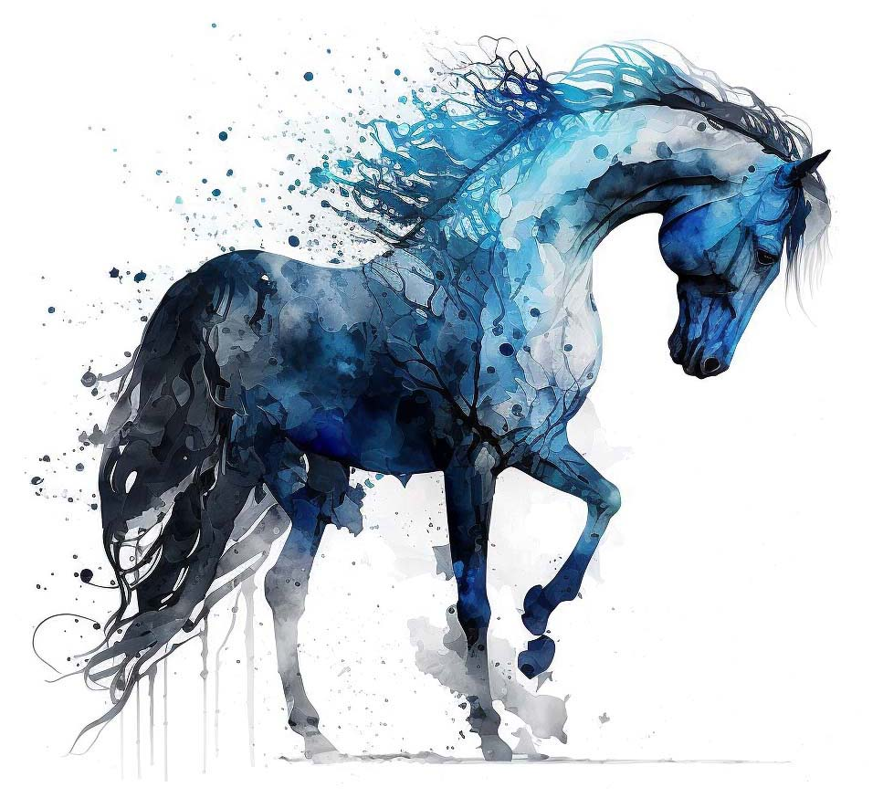

PROGRAMMES
- Définir la cession à la jambe et ses critères de jugement.
- Définir les transitions, qualités, défauts.
- Reconnaitre et nommer les principaux mors de filet.
- Donner l'emplacement des lettres de la carrière de dressage.
- Citer les noms des principaux obstacles de CSO.
- Expliquer le numéro SIRE.
- Expliquer la puce : lieu d'implantation, usage, lecteur.
- Expliquer les listes et l'obligation d'inscription pour concourir.
- Connaître les grands principes d'apprentissage permettant d'apprendre au cheval.
- En donner des exemples et les conditions et limites de leur usage.
- Identifier des différents types de Pie, de tachetés, des adjonctions.
- Identifier les principales parties du squelette.
- Identifier les grands groupes musculaires et leur rôle.
- Expliquer les grandes particularités de la digestion du cheval.
CONNAISSANCES GÉNÉRALES
CONNAISSANCE DU CHEVAL
- Expliquer les critères de jugement des mouvements d'une reprise de dressage Club.
- Expliquer les allures artificielles ou défectueuses.
- Citer les critères de qualité ou les défauts des allures.
- Expliquer les notes d'ensembles et leurs critères de jugement.
- Définir la mise sur la main et l'impulsion.
- Définir le galop à faux et ses qualités.
- Citer les principaux enrênements de travail monté : expliquer le but de leur usage et leurs effets.
- Citer les noms des principaux obstacles de Cross.
- Décrire le pied et la ferrure.
- Lister les principales maladies du cheval et leurs symptômes.
- Expliquer les variations des besoins alimentaires du cheval en fonction de différents facteurs à prendre en compte.
- Évaluer l'état corporel d'un cheval (embonpoint, maigreur).
- Nommer les étapes du travail du maréchal-ferrant.
- Expliquer les grandes étapes de la reproduction.
- Expliquer la démarche pour identifier un cheval.
- Savoir utiliser les outils d'identification - nuancier, documents.
- Expliquer le mécanisme du reculer.
CONNAISSANCES GÉNÉRALES
CONNAISSANCE DU CHEVAL
- Définir l'épaule en dedans, qualités et défauts d'exécution.
- Connaître le rôle et l'effet de la bride.
- Expliquer ce qu'est la rectitude.
- Connaître les principaux enrênements du travail en longe : but, effets.
- Identifier et nommer les défauts d'aplombs principaux des membres.
- Pouvoir identifier un cheval en utilisant les outils si besoin.
- Savoir lire un livret et vérifier le signalement d'un cheval.
- Expliquer et identifier l'impact des transports sur la santé et le bien être des chevaux et des poneys.
- Décrire et expliquer les grands principes de rationnement pour respecter la santé et le bien-être des chevaux et des poneys.
- Comprendre et expliquer les différentes dénominations des produits commercialisés pour l'alimentation et la complémentation des chevaux
CONNAISSANCES GÉNÉRALES
CONNAISSANCE DU CHEVAL